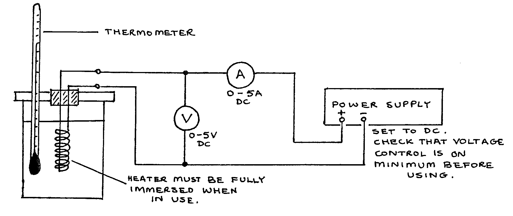

D2-1: Specific Heat Capacity of Water: Electrical Method¶
NB: This experiment requires mains electricity.
Apparatus¶
Copper calorimeter (unlagged, with fitted lid and electrical heater); thermometer (\(0-100\text{°C}\)); voltmeter (\(0-5\text{Vdc}\)); ammeter (\(0-5\text{Vac}\)); power supply (dc); stopclock; measuring cylinder (\(100\text{ml}\) with \(100\text{ml}\) water); triple beam balance; 5 connecting leads; 1 sheet graph paper

Procedure¶
- Find the mass of the calorimeter. Pour in \(100\text{cm}^3\) water. Record the calorimeter mass \(m_c\) and the mass of water \(m_w\).
- Assemble the apparatus as above. Switch on and quickly adjust the voltage so that A reads \(4\text{A}\). Switch off.
- Shake the calorimeter gently to stir the water, then record the starting temperature \(\Theta_1\) .
- Switch on and start the stopclock. Record readings of current and voltage. After 30s, read the temperature and continue reading the time and temperature every 30s. Occasionally shake the calorimeter gently.
- When the temperature has risen about 15°C, note the stopclock time \(t\) and switch off the heater. CONTINUE TIMING, BUT DO NOT TURN ON THE HEATER AGAIN. Continue recording temperature and time every 30s for a further time of \(t\) seconds.
- Plot a graph of temperature \(\Theta\) against time. From the graph read: initial temperature \(\Theta_1\), highest temperature \(\Theta_2\), the time \(t'\) taken to reach \(\Theta_2\) ; (may not equal t), and the temperature fall \(x\) during a period \(\frac{1}{2} t'\) after time t’.
Theory¶
Starting with conservation of energy:
\[\text{Electrical energy supplied} = \text{Heat gained by water and calorimeter}\]
The ‘cooling correction’ to allow for \(\text{heat loss} = x\) °C.
Then:
\[\begin{split}V I t &= (m_c c_c + m_w c_w)((\Theta_2 + x) - \Theta_1)\\\end{split}\]
Where:
\[\begin{split}c_c &= \big(\text{specific heat capacity of copper}\big) = 3.8 \times 10^2 \text{Jkg} ^{-1} \text{K} ^{-1} \\
c_w &= \big(\text{specific heat capacity of water}\big)\end{split}\]
Questions¶
- Use the above equation and the readings from your graph to determine the specific heat capacity of water.
- If an accurate value of \(c_w = 4190\) Jkg \(^{-1}\) K \(^{-1}\), calculate the % error in your value.
- Explain the most likely sources of error in your experiment and for each source give a suitable precaution to reduce its effect.